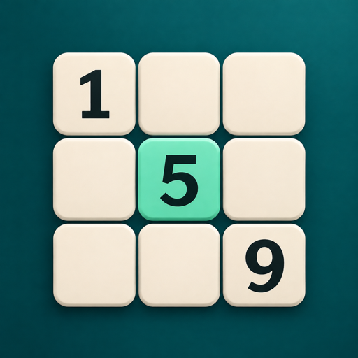
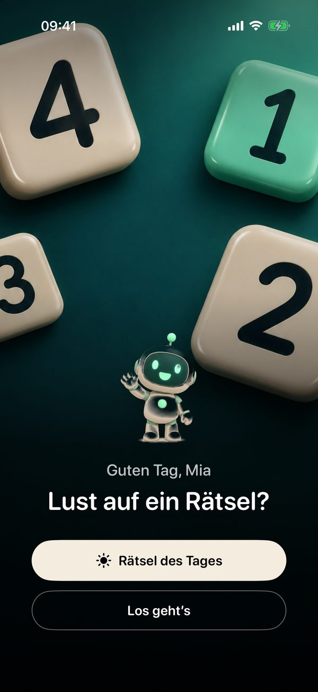
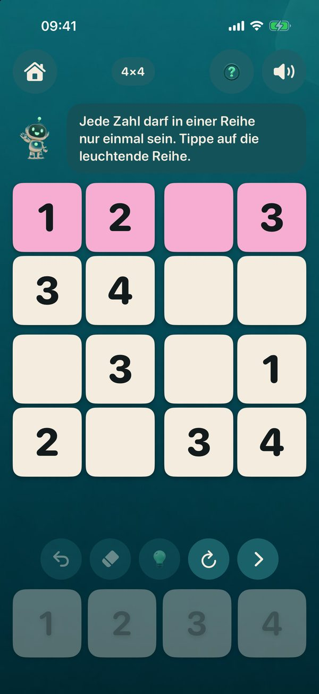
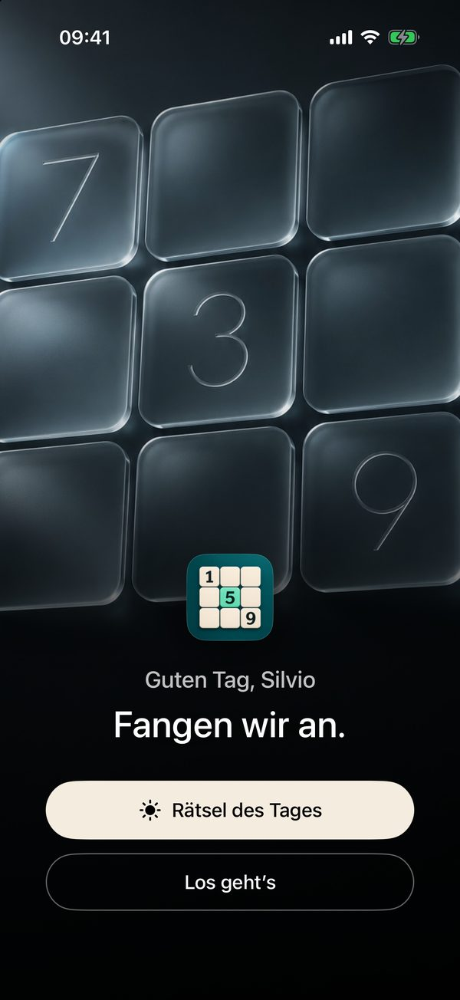
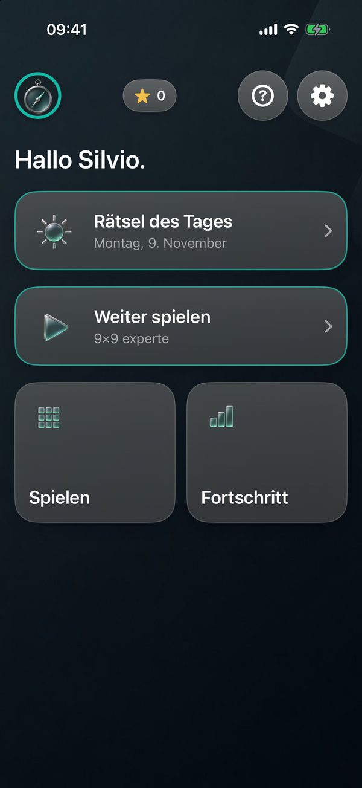
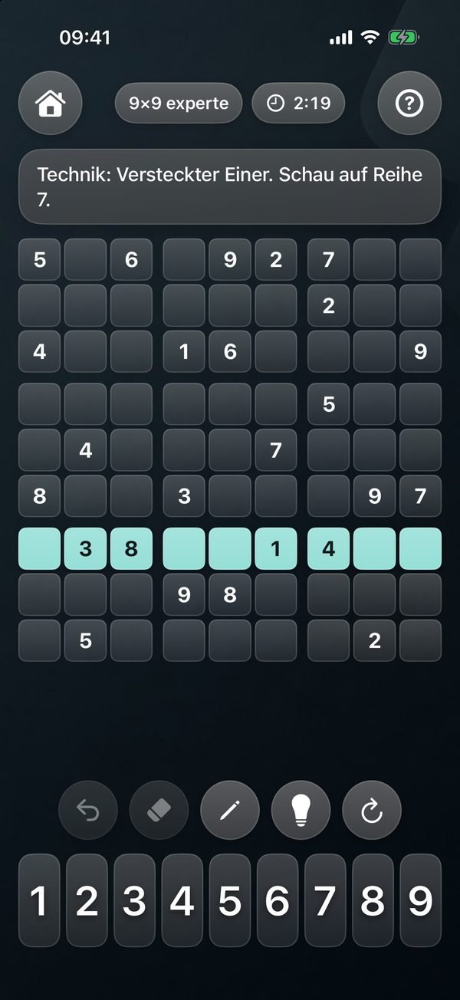
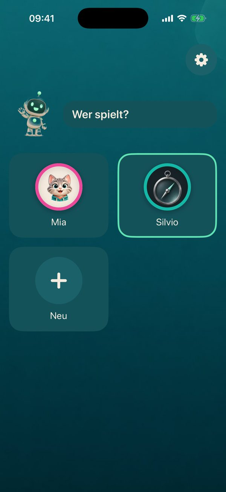

Kinder lernen mit einem kleinen Roboter, was Reihe, Spalte und Block bedeuten. Erwachsene spielen in derselben App bis 9×9 experte, und die Hinweise nennen die Technik, mit der man selbst draufkommt.
Beim Anlegen eines Profils wählst du Kind oder Erwachsen. Davon hängen Aussehen, Hilfen und Stufen ab, für jedes Profil einzeln.


Ein Roboter erklärt, liest vor und freut sich mit. Es geht los mit 4×4, nach fünf gelösten Rätseln wird die nächste Stufe frei.


Ruhig, in Glas und Metall. Alle Größen und vier Stufen sind von Anfang an frei, von leicht bis experte.
Die Glühbirne verrät nicht einfach eine Zahl. Erst nennt sie die Technik und zeigt, wo du hinschauen sollst. Wer dann noch nicht weiterkommt, bekommt das Feld mit Begründung, erst zuletzt die Zahl. Gezählt wird das als ein Hinweis.
Schwere und Experten-Rätsel lassen sich immer mit diesen Techniken lösen. Raten ist nie nötig.


Jedes Familienmitglied hat eigene Sterne, eigene Stufen und ein eigenes Bild: 16 Tiere und Figuren für Kinder, 16 Objekte aus Glas und Metall für Erwachsene.
Der Fortschritt liegt in deiner privaten iCloud und ist auf iPhone und iPad gleich. Ohne iCloud bleibt alles auf dem Gerät.
Laden ist kostenlos. 4×4 und das Rätsel des Tages bleiben immer frei, dazu ein paar Rätsel jeder höheren Stufe zum Ausprobieren. Ein einziger Kauf schaltet alles frei, über die Familienfreigabe für die ganze Familie.
Keine Werbung, kein Abo, kein Konto. Die App sammelt keine Daten. Der Preis ist geplant und gilt ab dem Erscheinen im App Store.
Quadrino wird gerade über TestFlight getestet. Sobald die App im App Store erscheint, steht der Link hier. Fragen und Wünsche gern über Support.